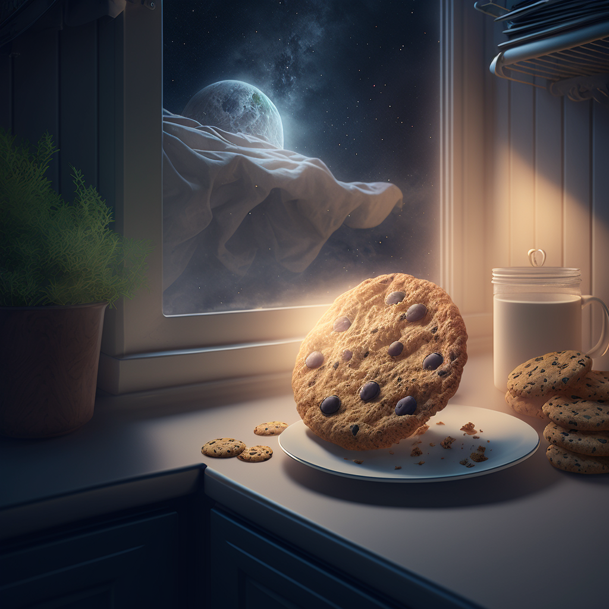
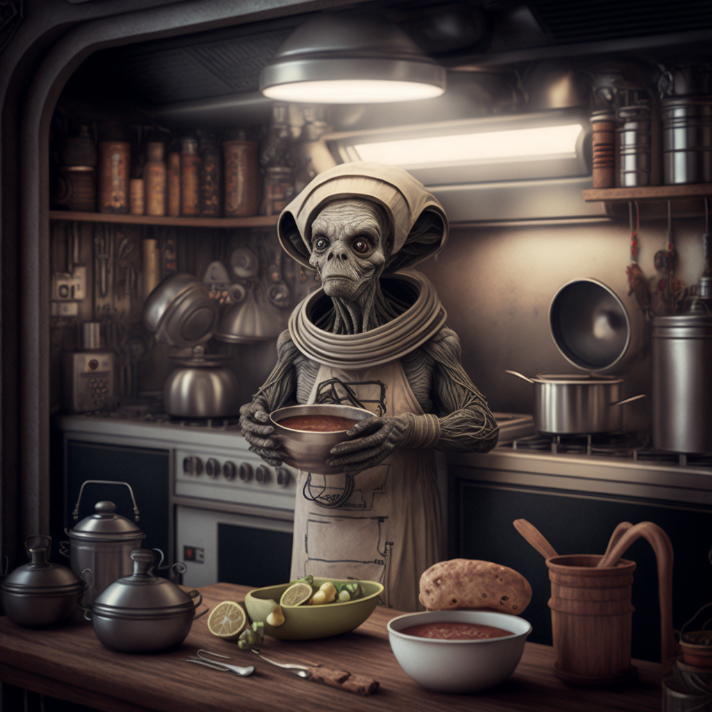

Lasagna

Cookies

Pizza
Borgag was born on the planet Ceres within the Nebulon galaxy. He has had a lifelong pasison for cooking and began collectiing his favorite recipes when he was just a tadpole.
Note: All images with Midjourney AI and all text was written by ChatGPT.